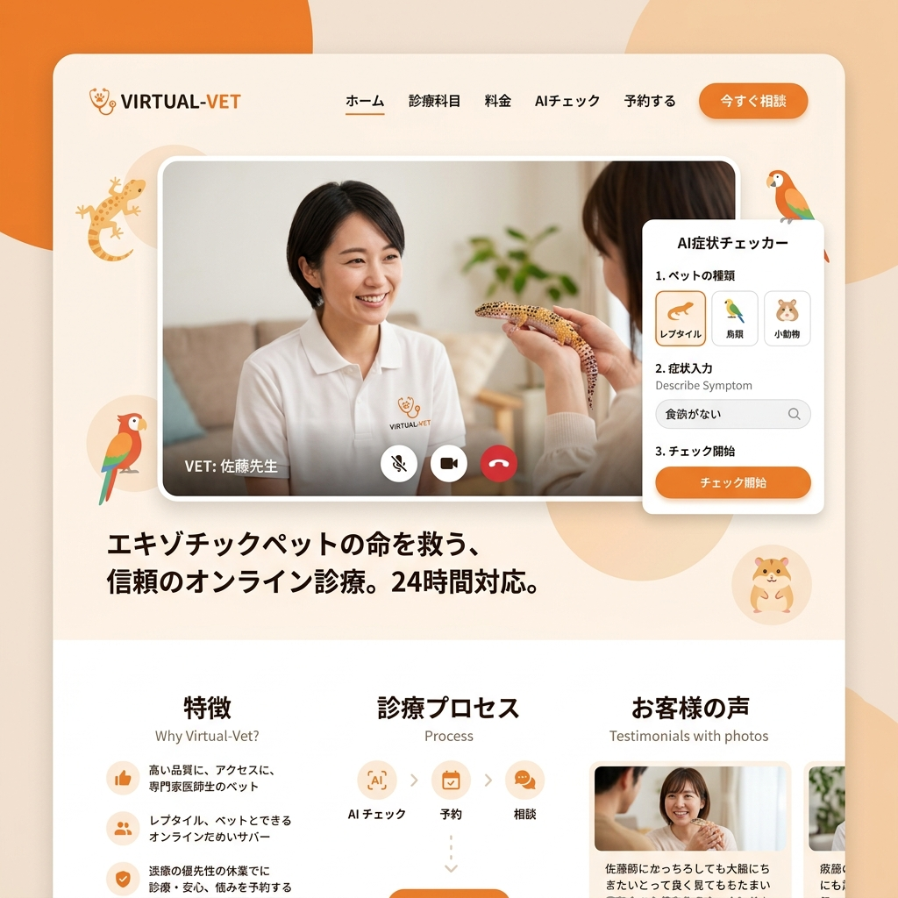

エキゾチックペットの命を救う、
24時間オンライン診療。
犬猫と違い、爬虫類や鳥類を診れる専門医は極めて稀です。VIRTUAL-VETは、全国の専門獣医師と飼い主を即座に繋ぎ、特有の症状に特化したAI問診で手遅れを防ぎます。

「診てくれる病院がない」という絶望
ハリネズミがご飯を食べない、カメレオンの肌の色がおかしい。慌てて動物病院に駆け込んでも「犬猫専門なので診られません」と断られる。この残酷な現状が、多くの小さな命を奪ってきました。私たちはこの医療格差をテクノロジーで埋めます。
エキゾチックペットに特化した独自機能
AI症状チェッカー
「トカゲ・食欲不振・温度28度」などの条件を入力すると、数万件の症例データベースから緊急度を即座に判定し、受診を推奨します。
高画質カメラ・共有ツール
微細なフンの状態や、皮膚の変色などを獣医師に正確に伝えるため、マクロ撮影モードや動画の事前アップロード機能を搭載。
飼育環境のIoT連携
スマート温湿度計と連携し、ケージ内の過去24時間の環境データを獣医師に自動共有。環境要因による体調不良を素早く特定します。
全国トップクラスの専門医ネットワーク
VIRTUAL-VETに登録しているのは、エキゾチックアニマルの臨床経験が豊富な認定医のみ。地方に住んでいても、東京の専門医によるセカンドオピニオンや、緊急のオンライン処置指導を受けることが可能です。
オンラインで完結するお薬の処方・配送
ビデオ通話での診察後、必要なお薬や専用の流動食、サプリメントをご自宅まで最短当日配送。ストレスに弱い小動物を、無理に病院へ連れ出すリスクを最小限に抑えます。
Case Study | フクロモモンガの危機
深夜に突然自傷行為を始めたフクロモモンガ。近くの救急病院は全滅でしたが、VIRTUAL-VETを通じて専門医に繋がり、動画で症状を確認。「自咬症」と診断され、応急処置としてのカラーの作り方と鎮静方法の指導を受け、一命を取り留めました。
すべてのペットに、平等な医療を
どんなに小さく、珍しい動物であっても、飼い主にとってはかけがえのない家族です。私たちはオンライン診療という形で、すべてのペットが適切な医療にアクセスできる世界を実現します。